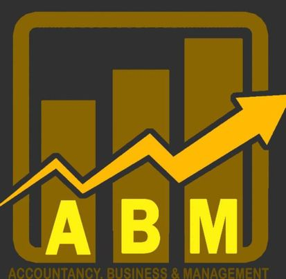

ABM
The ABM strand, also known as the Accountancy, Business, and Management strand, is one of the strands offered in the senior high school program in the Philippines. It is designed to provide students with the skills and knowledge needed to succeed in the fields of accountancy, business, and management.
